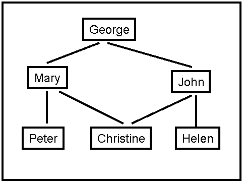

Assignment 1
Programming and Written Assignment - Uninformed Search &
Informed Search
Max possible score:
- 4308: 150 Points (+15 Points EC)
- 5360: 150 Points
Task 1
Max: [4308: 75 Points,
5360: 75 Points]
Note: This is a
ABET Assesment Task
Implement a search algorithm that can find a route between any two
cities. Your program will be called find_route, and will take exactly
commandline arguments as follows:
find_route input_filename origin_city
destination_city heuristic_filename
An example command line is:
find_route input1.txt Bremen Kassel (For doing Uninformed search)
or
find_route input1.txt Bremen Kassel h_kassel.txt (For doing
Informed search)
If heuristic is not provided then program must do uninformed search.
Argument
input_filename
is the name of a text file such as input1.txt,
that describes road connections between cities in some part of the
world. For example, the road system described by file input1.txt can be
visualized in Figure 1 shown above. You can assume that the input file
is formatted in the same way as input1.txt:
each line contains three
items. The last line contains the items "END OF INPUT", and that is how
the program can detect that it has reached the end of the file. The
other lines of the file contain, in this order, a source city, a
destination city, and the length in kilometers of the road connecting
directly those two cities. Each city name will be a single word (for
example, we will use New_York instead of New York), consisting of upper
and lowercase letters and possibly underscores.
IMPORTANT NOTE:
MULTIPLE INPUT FILES WILL BE USED TO GRADE THE
ASSIGNMENT, FILE input1.txt
IS JUST AN EXAMPLE. YOUR CODE SHOULD WORK
WITH ANY INPUT FILE FORMATTED AS SPECIFIED ABOVE.
The program will compute a route between the origin city and the
destination city, and will print out both the length of the route and
the list of all cities that lie on that route. It should also display
the number of nodes expanded and nodes generated. For example,
find_route input1.txt Bremen Kassel
should have the following output:
nodes expanded: 12
nodes generated: 20
distance: 297.0 km
route:
Bremen to Hannover, 132.0 km
Hannover to Kassel, 165.0 km
and
find_route input1.txt London Kassel
should have the following output:
nodes expanded: 7
nodes generated: 7
distance: infinity
route:
none
For full credit, you should produce outputs identical in format to the
above two examples.
If a heuristic file is provided then
program must perform Informed search. The heuristic file gives the
estimate of
what the cost could be to get to the given destination from any start
state (note this is just an estimate). In this case the command line
would look like
find_route input1.txt Bremen Kassel h_kassel.txt
Here the last argument contains a text file what has the heuristic
values for every state wrt the given destination city (note different
destinations will need different heuristic values). For example, you
have been provided a sample file h_kassel.txt
which gives the heuristic value for every state (assuming kassel is the
goal).
Your program should use this information to reduce the number of nodes
it ends up expanding. Other than that, the solution returned by the
program should be the same as the uninformed version. For example,
find_route input1.txt Bremen Kassel h_kassel.txt
should have the following output:
nodes expanded: 3
nodes generated: 8
distance: 297.0 km
route:
Bremen to Hannover, 132.0 km
Hannover to Kassel, 165.0 km
Suggestions
Pay close attention to all specifications on this page, including
specifications about output format, submission format. Even in cases
where the program works correctly, points will be taken off for
non-compliance with the instructions given on this page (such as a
different format for the program output, wrong compression format for
the submitted code, and so on). The reason is that non-compliance with
the instructions makes the grading process significantly (and
unnecessarily) more time consuming.
Grading
The assignments will be graded out of 75 points.
- 35 points: The program
always finds a route between the
origin and the destination, as long as such a route exists.
- 15 points: The program
terminates and reports that no route can be found when indeed no route
exists that connects source and destination (e.g., if source is London
and destination is Berlin, in the above example).
- 15 points: In addition to
the above requirements, the
program always returns optimal routes. In other words, no shorter route
exists than the one reported by the program.
- 10 points: Correct
implementation of any informed search
method.
- Negative points: penalty points will be awarded by the
instructor and
TA generously and at will, for issues such as: submission not including
precise and accurate instructions for
how to run the code, wrong compression format for the submission, or
other failures to comply with the instructions given for this
assignment. Partial credit for incorrect solutions will be given ONLY
for code that is well designed and well documented. Code that is badly
designed and badly documented can still get full credit as long as it
accomplishes the required tasks.
Task 2
Max: [4308: 32 Points,
5360: 28 Points]
Consider the navigation problem shown in Figure 2. The number next to
each
edge is the cost of the performing the action corresponding to that
edge. You start from A and your goal is to get to G. List the
order in which nodes are expanded,
which nodes are added to the fringe
and which states are added to the
closed set when performing Graph
Search using:
- breadth-first search.
- depth-first search.
- iterative deepening search.
- uniform cost search.
Figure 2: Search Tree for Task 2
Task 3
Max: [4308: 18 Points,
5360: 12 Points]
A social network graph (SNG) is a graph where each vertex is a
person and each edge represents an acquaintance. In other words, an SNG
is a graph showing who knows who. For example, in the graph shown on
Figure 3, George knows Mary and John, Mary knows Christine, Peter and
George, John knows Christine, Helen and George, Christine knows Mary
and John, Helen knows John, Peter knows Mary.
The degrees of separation measure how closely connected two people are
in the graph. For example, John has 0 degrees of separation from
himself, 1 degree of separation from Christine, 2 degrees of separation
from Mary, and 3 degrees of separation from Peter.
- From among general tree search
using breadth-first search,
depth-first search,
iterative deepening search, and uniform cost search, which one(s)
guarantee finding the correct number of degrees of separation between
any two people in the graph?
- For the SNG shown in Figure 3, draw the
first three
levels of the search tree, with John as the starting point (the first
level of the tree is the root).
- Is there a one-to-one correspondence
between nodes in the search tree and vertices in the SNG (i.e. does
every node in the search tree correspond to a vertex in the SNG)? Why,
or why
not? In your answer here, you should assume that the search algorithm
does not try to avoid revisiting the same state.
- Draw an SNG containing exactly 5 people,
where at least
two people have 4 degrees of separation between them.
- Draw an SNG containing exactly 5 people,
where all
people have 1 degree of separation between them.
- In an implementation of
breadth-first tree
search for
finding degrees of separation, suppose that every node in the search
tree takes 1KB of memory. Suppose that the SNG contains one million
people. Outline (briefly but precisely) how to make sure that the
memory required to store search tree nodes will not exceed 1GB (the
correct answer can be described in one-two lines of text). In your
answer here you are free to enhance/modify the breadth-first search
implementation as you wish, as long as it remains breadth-first (a
modification that, for example, converts breadth-first search into
depth-first search or iterative deepening search is not
allowed).

Figure 3: A Social Network Graph
Task 4
Max: [4308: 10 Points,
5360: 8 Points]
Figure
4: A search graph showing states and costs of moving from one state to
another. Costs are undirected.
Consider
the search space shown in Figure 4. D is the only goal state. Costs are
undirected. For each of the following heuristics, determine if it is
admissible or not. For non-admissible heuristics, modify their values
as needed to make them admissible.
Heuristic 1:
h(A) = 5
h(B) = 50
h(C) = 15
h(D) = 0
h(E) = 10
h(F) = 0
Heuristic 2:
h(A) = 70
h(B) = 70
h(C) = 70
h(D) = 70
h(E) = 70
h(F) = 70
Heuristic 3:
h(A) = 35
h(B) = 30
h(C) = 20
h(D) = 5
h(E) = 0
h(F) = 30
Heuristic
4:
h(A) = 0
h(B) = 0
h(C) = 0
h(D) = 0
h(E) = 0
h(F) = 0
Task 5
Max: [4308: 15 Points,
5360: 12 Points]
Consider
a search space, where each state can be a city, suburb, village, farm,
or
mountain. The goal is to reach any state that is a mountain. Here are
some rules on the
successors of different states:
- Successors of a city are always suburbs.
- Each city has at least one
suburb as a successor.
- Successors of a suburb can only be cities, or suburbs, or
villages.
- Each suburb has at least one suburb as a successor.
- Successors of a village can only be villages, or farms, or
mountains.
- Each village has atleast one farm as a successor
- Successors of a farm can only be villages, or farms, or
mountains.
- Each farm has at least one other farm as a successor.
- Successors of a mountain can only be mountains.
Define the best admissible heuristic h you can define using only the
above information (you should not assume knowledge of any additional
information about the state space). By "best admissible" we mean that
h(n) is always the highest possible value we can give, while ensuring
that heuristic h is still admissible.
Assume that any move from one state to another has cost
1.
Task 6 (Extra Credit for 4308, Required for 5360)
Max: [4308: 15 Points EC,
5360: 15 Points]
Figures 5 and 6 show maps where all the towns are on a
grid. Each town T has coordinates (Ti, Tj), where Ti Tj are
non-negative integers. We use the term Euclidean distance for the
straight-line distance between two towns, and the term driving distance
for the length of the shortest driving route connecting two towns. The
only roads that exist connect towns that have Euclidean (straight-line)
distance 1 from each other (however, there may be towns with Euclidean
distance 1 from each other that are NOT directly connected by a road,
for example in Figure 6).
Consider greedy search, where the node to be expanded is always the one
with the shortest Euclidean distance to the destination. Also consider
A* search, where h(n) is the Euclidean distance from n to the
destination (remember that the next node is picked not based on h(n)
but based on f(n) = g(n) + h(n)). For each of the maps showing on
Figures 5 and 6, which of the following statements is true?
- Greedy search always performs better than or the same as A*.
- Greedy search always performs worse than or the same as A*.
- Greedy search performs sometimes better, sometimes worse,
and sometimes
the same as A*, depending on the start and end states.
Justify your answer. For the purposes of this question, the performance
of a search algorithm is simply measured by the number of nodes visited
by that algorithm. Note that you have
to provide separate answers for
Figure 5 and for Figure 6.
 Figure
5:
Figure
5: A map of cities on a fully connected grid. Every city is
simply named by its coordinates.

Figure 6: A map of cities on a partially connected grid. Every city is
simply named by its coordinates.
How to submit
For Programming part: Implementations in C, C++, Java, and Python will
be accepted. Points will be taken off
for failure to comply
with this requirement.
Create a ZIPPED
directory called assignment1_code_<net-id>.zip (no other
forms
of compression
accepted, contact the instructor or TA if you do not know how to
produce .zip files). The directory should contain source code.The
folder should also contain a file called readme.txt, which
should specify precisely:
- Name and UTA ID of the student.
- What programming language is used. (also mention if the code is
omega compatible)
- How the code is structured.
- How to run the code, including very specific compilation
instructions,
if compilation is needed. Instructions such as "compile using g++" are
NOT considered specific.
- Insufficient or unclear instructions will be penalized by
up to 10
points.
- Code that
the TA cannot run gets AT MOST 75% credit.
For Written part:
- The answers can be typed as a document or handwritten and
scanned.
- Name files as
assignment1_written_<net-id>.<format>
- Accepted document formats .pdf. If you are using
Word, OpenOffice or LibreOffice, make sure
to
save as .pdf
- Please do not submit
.txt files.
- If
you are scanning handwritten documents make sure to scan it at a
minimum of 600dpi and save as a .pdf or .png file. Do not
insert images in word document and submit.
- If there are multiple files in your submission, zip them
together as assignment1_written_<net-id>.zip.
The assignment should be submitted via CANVAS.
Zip all the files for both the programming and written files together
into assignment1_<net-id>.zip and submit it.
Submission checklist
- Does the programming section submission include a readme.txt
file, as specified?
- Have scanned all the documents for the written section as
specified?
- Did you zip and name the files as described?
- Did you upload the file correctly?
- Did you submit the uploaded file?